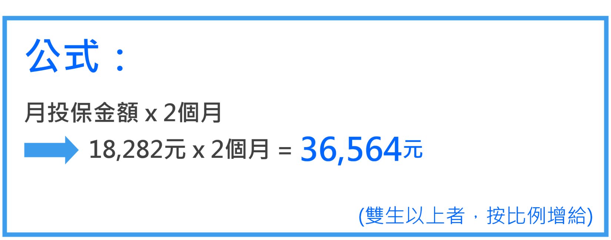

生育給付請領資格
請領資格
- 被保險人於國保加保期間分娩或早產。
- 同時符合勞保、農保(配偶)生育給付條件者，僅得則一請領。
※生育給付係按被保險人生產當月的月投保金額一次發給2個月生育給付(若被保險人於104年12月17日以前分娩或早產，依當時適用之法律，生育給付為1個月)。
生育給付金額
生育給付金額

※生育給付係按被保險人生產當月的月投保金額一次發給2個月生育給付(若被保險人於104年12月17日以前分娩或早產，依當時適用之法律，生育給付為1個月)。